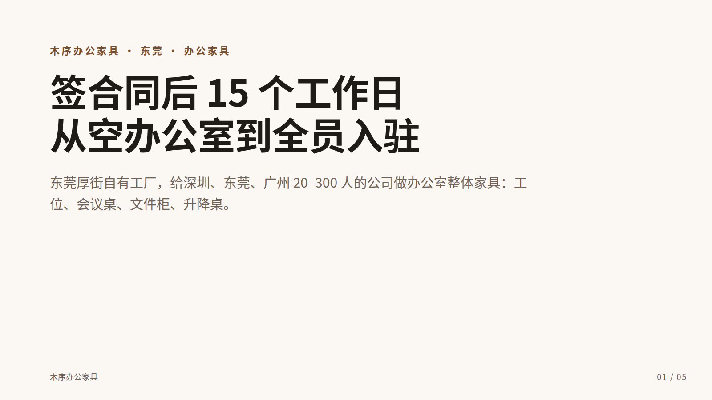
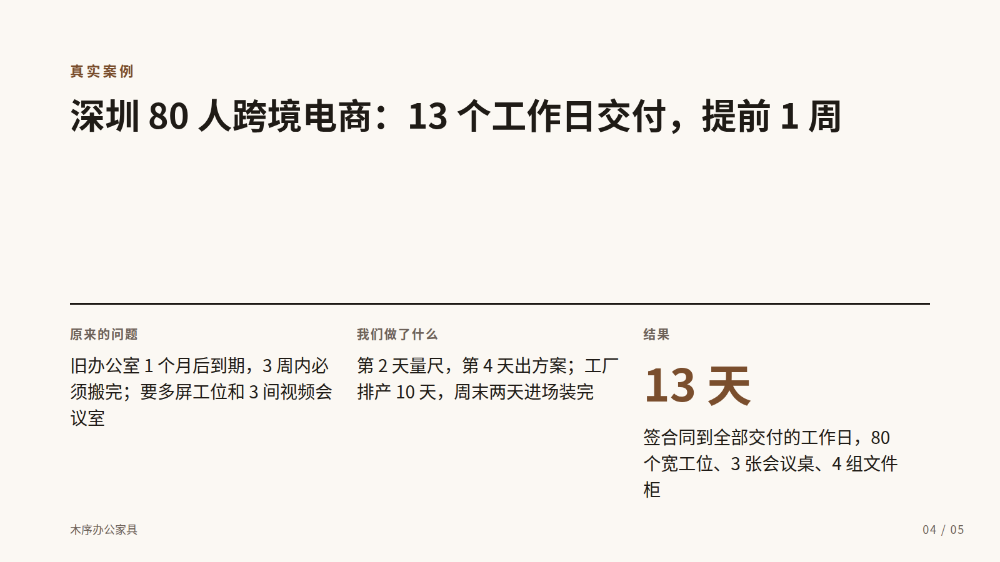
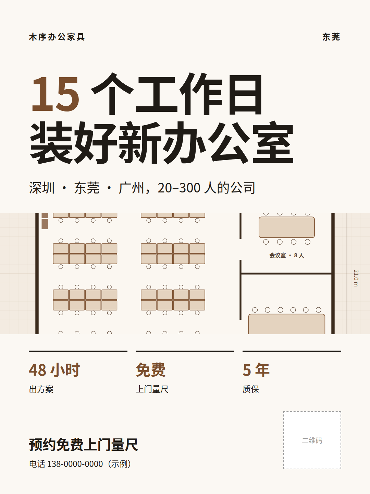
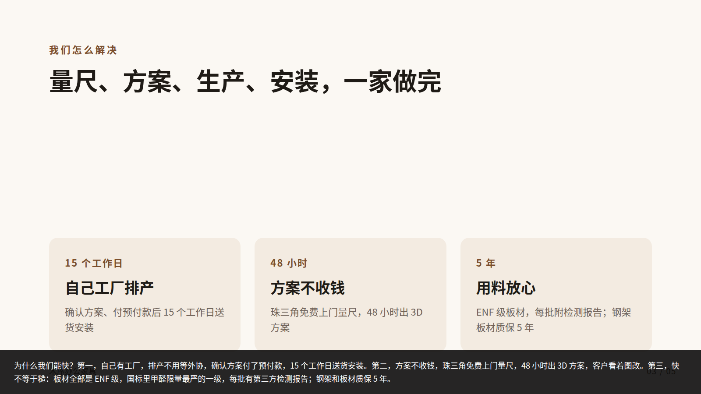
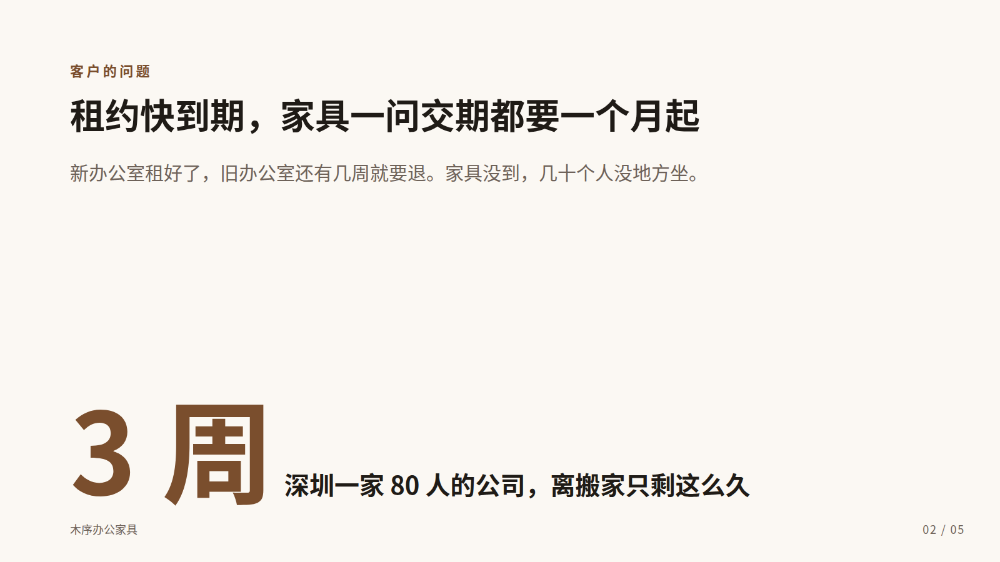
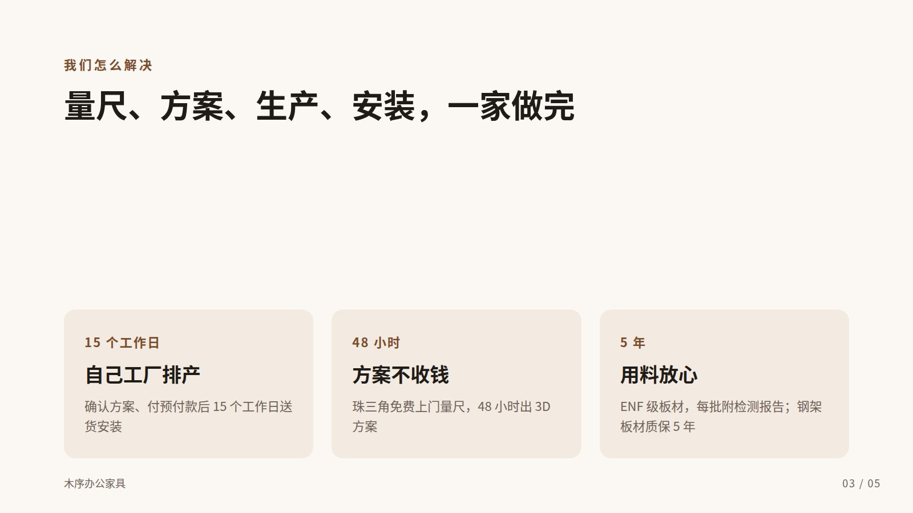
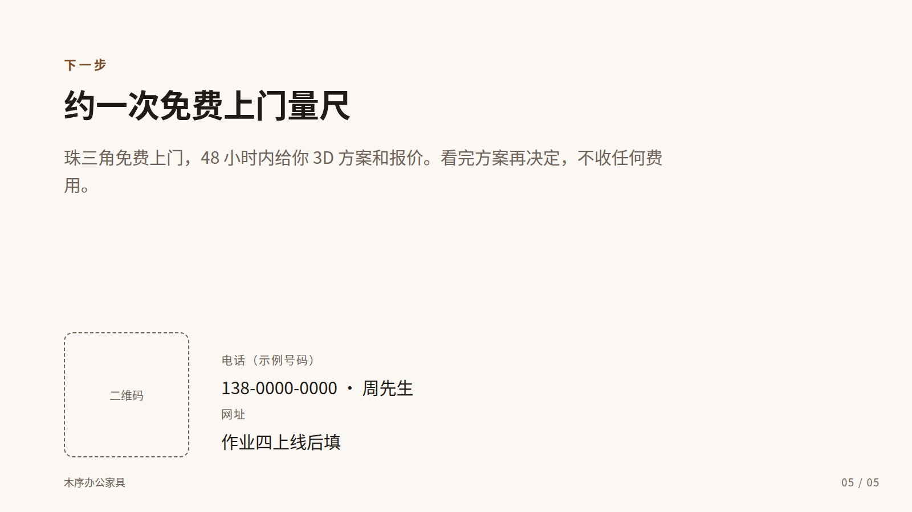

作业二教程｜为你的业务做 PPT 和海报
 Grokbot
Grokbot Codex
Codex WorkBuddy课件 第 32 页
WorkBuddy课件 第 32 页这一节的产出会直接用在作业四的网站上：PPT 的一句话结论是网站首屏，海报的颜色写进 brand.md 后就是网站配色。示例的成品在 跟做样例_木序办公家具/产出/。



A定观众和一句话结论（15 分钟）
PPT 做不好，多半是没想清楚讲给谁听。先让「业务顾问」给你 3 个角度，它已经知道你的业务卡片。
#! 发给 Grokbot「业务顾问」
我要做一份 5 页的业务介绍 PPT。请根据你已经知道的我的业务卡片，给我 3 个不同的角度。
每个角度写：讲给谁听（具体到场合，如「第一次见面的企业行政」）、一句话结论（20 字以内）、5 页每页的标题（写成结论句）。
3 个角度要真的不同，比如一个讲省钱、一个讲省时间、一个讲风险。
Grokbot「业务顾问」
角度 1 · 省时间 讲给：租约快到期、正在找家具的企业行政 一句话结论：签合同后 15 个工作日，从空办公室到全员入驻 标题：① 15 个工作日从空办公室到入驻 ② 租约快到期，家具交期却要一个月起 ③ 量尺、方案、生产、安装一家做完 ④ 80 人公司 13 个工作日交付 ⑤ 约一次免费量尺
角度 2 · 省心 讲给：第一次装修办公室的创业公司老板 一句话结论：不懂家具也不怕，看着 3D 方案改到满意再签
角度 3 · 少风险 讲给：要对甲醛、质保负责的行政主管 一句话结论：ENF 板材每批有检测报告，钢架板材质保 5 年
选一个，把观众和一句话结论记下来。示例选了角度 1，因为业务卡片里「客户最头疼的问题」就是时间。
B生成 5 页 PPT 和讲稿（30 分钟）
复制模板，叫 Skill
- 把
作业二-PPT与海报/PPT模板.html复制到业务文件夹的产出/ - Codex 智能程度调到 High
- 发：
#! 发给 Codex
用 ppt-5pages 这个 Skill 做业务介绍 PPT，观众是「租约快到期、正在找家具的企业行政」，一句话结论是「签合同后 15 个工作日，从空办公室到全员入驻」。模板用 产出/PPT模板.html。
先看大纲，再成稿
Skill 第 1 步只出大纲。这时候改最便宜：
Codex：5 页大纲
| 页 | 标题 | 放什么 | 出处 |
|---|---|---|---|
| 1 | 签合同后 15 个工作日，从空办公室到全员入驻 | 我是谁：厚街工厂，20–300 人公司 | 公司介绍、2026 手册 |
| 2 | 租约快到期，家具一问交期都要一个月起 | 大数字「3 周」：80 人公司离搬家只剩的时间 | 案例_深圳跨境电商 |
| 3 | 我们的三大优势 | 15 个工作日 / 48 小时方案 / 5 年质保 | 2026 手册、交付流程、售后条款 |
| 4 | 深圳 80 人跨境电商：13 个工作日交付 | 问题 → 做了什么 → 结果 | 案例_深圳跨境电商 |
| 5 | 约一次免费上门量尺 | 电话、二维码 | 公司介绍 |
确认后我再填进模板。
示例在这里改了一处：第 3 页「我们的三大优势」是名词，读不出意思，回复「第 3 页标题改成一句结论，说清为什么快」。它改成了「量尺、方案、生产、安装，一家做完」。
打开看
确认后它把内容填进模板，存成 产出/日期_业务介绍_v1.html。双击用浏览器打开：
- ← → 翻页，N 显示讲稿，F 全屏
- Ctrl/Cmd + P 可以导出 PDF




检查
- 每页只做一件事
- 让 Codex 附上出处表，每个数字都能在知识库找到。示例：
20261028_业务介绍_出处表.md
C改两轮（15 分钟）
第一轮：只读 5 个标题
不看正文，只把 5 个标题连起来读，像不像一段完整的话？示例改完是：
签合同后 15 个工作日，从空办公室到全员入驻 → 租约快到期，家具一问交期都要一个月起 → 量尺、方案、生产、安装，一家做完 → 深圳 80 人跨境电商：13 个工作日交付，提前 1 周 → 约一次免费上门量尺
第二轮：每页正文不超过 40 字
#! 发给 Codex
第二轮：每页正文压到 40 字以内，删掉形容词和「专业」「一站式」这类词，数字不能动。改完存成 _v2。
收一条小组意见
截图发到小组群（WorkBuddy 连了企业微信的话，可以让它帮你发），收一条意见改掉。示例收到的是「第 5 页没说量尺要不要钱」，于是加了「看完方案再决定，不收任何费用」。
示例 v1 到 v2 改了什么，记在 出处表的最后。
D海报（30 分钟）
先排信息层级，不出图
- 把
作业二-PPT与海报/海报模板.html复制到产出/ - 发：
#! 发给 Codex
用 poster 这个 Skill 做一张海报，主题是「15 个工作日装好新办公室」，用于展会和朋友圈。模板用 产出/海报模板.html。
Codex：信息层级
- 第一眼（3 秒）：15 个工作日装好新办公室
- 第二眼：深圳 · 东莞 · 广州，20–300 人的公司
- 第三眼：48 小时出方案 · 免费上门量尺 · 5 年质保
- 最后：预约免费上门量尺，电话 138-0000-0000，右下角二维码
展会文案里写的是「15 天」，资料里是「15 个工作日」。海报按资料写「15 个工作日」，避免客户按自然日算。
AI 帮你挑出了一个坑
「15 天」和「15 个工作日」差了将近一周。海报、网站、口播里写的承诺，客户会按字面理解，宁可长一点也要准确。
选配色
确认层级后它给 2 个方向：
Codex：2 个配色方向
A · 胡桃木：主色 #7a4e2d，辅色 #f3ebe1，背景 #fbf8f3。品牌名里有「木」，暖棕色像实木家具。 B · 墨绿：主色 #2f5d50，辅色 #e7efec，背景 #fbfaf7。偏「环保」，和 ENF 板材呼应。
示例选了 A。主视觉没有现成的产品照片，就让 Codex 画了一张办公室平面方案图（assets/plan.svg），正好对应「免费量尺、出方案」这个卖点，也没有版权问题。
导出 PNG
- 浏览器打开海报 HTML
- 右键 → 检查，按 Ctrl/Cmd + Shift + P
- 输入
screenshot，选 Capture node screenshot，鼠标先在元素面板里选中<div class="poster">
或者直接让 Codex 导出：「把 产出/海报_v1.html 截图存成同名 PNG，只截 .poster 这一块」。它要装截图工具时会请求批准。
写进 brand.md
#! 发给 Codex
把刚才选定的配色、字体、主视觉文件名、一句话结论写进 assets/brand.md。
示例：assets/brand.md。作业四做网站时，Codex 会读这个文件定配色。
检查
- 离屏幕 2 米看，3 秒内能说出是什么、给谁、怎么联系
- 全图文字不超过 80 字
- 图片和字体都有授权（思源黑体免费商用；网上搜的图不要用）
-
assets/brand.md填好了
交付对照
| 交付 | 你的文件 | 示例 |
|---|---|---|
| 5 页 PPT（第二轮改完） | 产出/日期_业务介绍_v2.html |
20261028_业务介绍_v2.html |
| 海报 | 产出/日期_海报_v1.png |
20261028_海报_v1.png |
| 视觉资产 | assets/brand.md |
brand.md |

卡住了
| 现象 | 怎么办 |
|---|---|
| 它没出大纲直接成稿了 | 说「按 Skill 第 1 步，先给大纲」；还这样就检查 Skill 是不是在 .agents/skills/ppt-5pages/ |
| 页面文字挤出边框 | 说「第 N 页文字超出了，正文压到 40 字以内，不改字号」 |
| PPT 里出现知识库里没有的数字 | 说「第 N 页的 ____ 出处是什么？找不到就删掉」 |
| 想要 10 页 | 进阶版：先把 5 页做扎实，再说「在第 3 页和第 4 页之间加 3 页，分别讲 ____」 |
| 海报颜色想换 | 打开 HTML，改最上面 :root 里的 4 个色值就行 |